pacman::p_load(maptools, tidyverse,
sf, raster, spatstat, tmap,lubridate,arrow,sp,spNetwork)Take-home Exercise 1 : Application of Spatial Point Patterns Analysis to discover the geographical distribution of Grab hailing services in Singapore
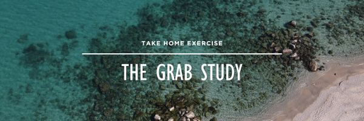
Hello everyone! In tiny dense Singapore, movement of people is large and fast. Hence, in depth analysis of our movement can provide meaningful and actionable insights on our spatial-temporal behaviour.
In Singapore, we move by utilising a multitude of avenues such as buses, MRTs, LRTs and private hail services. In this exercise, I will be exploring the movement of our people using grab. We will be utilising spatial point analysis methods to discover the geographical and spatio-temporal distribution of Grab hailing service locations in Singaore.
1 Install & Load Packages
We have to install and load these packages into our R environment so that we can utilise the methods in the packages.
Why do we need these packages?
Let me explain the high level purpose of each package.
Tidyverse
Imagine you have a bunch of dirty data that you woul have to handle. The Tidyverse package helps you handle the data. It has a bunch of packages within it to help handle data. It can do the following:
readr - reading and writing data into or out of a spreadsheet
tidyr - organizing and tidying up your data
ggplot2 - visualizing your data
dpylr - mainpulating your data, like doing some basic math to it.
maptools
SF package provides us with tools to work with data related to maps and geospatial data. It can
- Read and write geospatial data from and into files.
- Manipulate data - like cut out a specific area on a map
- Visualize data
sf
It provides a comprehensive and standardized way to represent and manipulate spatial data.
- Allows you to represent points, lines and polygons
- Allows you to represent data using coordinate reference system, and transform data using that.
raster
It help represent the data in a grid format - where the data is divided into a grid of cells and each cell has its own value. It also supports the modification of those cells.
It is also interoperable with other packages like sf, allowing it to be part of a larger data pipeline.
This package is useful when we want to calculate the density of each gridded area .
Spatstat
We know from previous exercises that different geographical entities on a map can be represented using a shape. Spatstat allows us to represent geographical entities using a point (x,y).
It also allows us to manipulate them, and conduct statistical analysis on their distribution or pattern along a geographical space.
lubridate
It allow you to manipulate date time data. It allows you to parse, format and do calculations on date time data.
This is very useful considering the temporal nature of our analysis. You will see us doing so in this exercise!
arrow
It helps us deal with tabular data in a fast, scalable and memory efficient way. This is important considering the large size of our data
tmap
Shows distribution of a characteristic across a geographic space.
2 Data
2.1 Data Download
Let us first look at the data we are utilising to conduct this analysis.
| Data Name | Description | Type | Format | Source |
| Grab-Posisi | Data on where grab taxis are at a specific time, and at what speed. | Aspatial | .parquet | Source |
| Road data set | Data on the roads present in Singapore, Malaysia, Brunei. | Geospatial | ESRI shapefile | Source |
| Master Plan 2019 Subzone Boundary (No Sea) | This data provides the internal and external boundary in Singapore. | Geospatial | .kml | Source |
2.2 Data Import
grab <- read_parquet("../../data/GrabPosisi/part-00000-8bbff892-97d2-4011-9961-703e38972569.c000.snappy.parquet")roads <- st_read(dsn = "../../data",
layer = "gis_osm_roads_free_1")Reading layer `gis_osm_roads_free_1' from data source
`C:\shaysnutss\IS1455-GAA\data' using driver `ESRI Shapefile'
Simple feature collection with 1765176 features and 10 fields
Geometry type: LINESTRING
Dimension: XY
Bounding box: xmin: 99.66041 ymin: 0.8021131 xmax: 119.2601 ymax: 7.514393
Geodetic CRS: WGS 84mpsz <- st_read(dsn = "../../data",
layer = "MPSZ-2019")Reading layer `MPSZ-2019' from data source `C:\shaysnutss\IS1455-GAA\data' using driver `ESRI Shapefile'
Simple feature collection with 332 features and 6 fields
Geometry type: MULTIPOLYGON
Dimension: XY
Bounding box: xmin: 103.6057 ymin: 1.158699 xmax: 104.0885 ymax: 1.470775
Geodetic CRS: WGS 842.3 Data Wrangling
We now have our data imported into our R environment, means we can interact with it and use it!
However, data often can’t be used as it is . We would have to change the data to fit our analysis needs. And that is what we will be doing in this section!
We will be doing it dataset by dataset:
2.3.1 Master Plan 2019 Subzone Boundary
2.3.1.1 Coordinate Reference System
Let’s start with checking the coordinate reference system of the dataset.
st_crs(mpsz)Coordinate Reference System:
User input: WGS 84
wkt:
GEOGCRS["WGS 84",
DATUM["World Geodetic System 1984",
ELLIPSOID["WGS 84",6378137,298.257223563,
LENGTHUNIT["metre",1]]],
PRIMEM["Greenwich",0,
ANGLEUNIT["degree",0.0174532925199433]],
CS[ellipsoidal,2],
AXIS["latitude",north,
ORDER[1],
ANGLEUNIT["degree",0.0174532925199433]],
AXIS["longitude",east,
ORDER[2],
ANGLEUNIT["degree",0.0174532925199433]],
ID["EPSG",4326]]We know that the coordinate reference system is WGS84. We have to convert it to SVY21. This is because we want to minimise distortions and enable accurate area and distance measurements. The earth is curved, and the WGS84 reference system results in the distance between two points in the equator being different from the distance between the equally spaced points up in north america.
So let’s convert this to SVY21:
mpsz <- st_transform(mpsz, crs = 3414)Let’s check if it has been converted correctly
st_crs(mpsz)Coordinate Reference System:
User input: EPSG:3414
wkt:
PROJCRS["SVY21 / Singapore TM",
BASEGEOGCRS["SVY21",
DATUM["SVY21",
ELLIPSOID["WGS 84",6378137,298.257223563,
LENGTHUNIT["metre",1]]],
PRIMEM["Greenwich",0,
ANGLEUNIT["degree",0.0174532925199433]],
ID["EPSG",4757]],
CONVERSION["Singapore Transverse Mercator",
METHOD["Transverse Mercator",
ID["EPSG",9807]],
PARAMETER["Latitude of natural origin",1.36666666666667,
ANGLEUNIT["degree",0.0174532925199433],
ID["EPSG",8801]],
PARAMETER["Longitude of natural origin",103.833333333333,
ANGLEUNIT["degree",0.0174532925199433],
ID["EPSG",8802]],
PARAMETER["Scale factor at natural origin",1,
SCALEUNIT["unity",1],
ID["EPSG",8805]],
PARAMETER["False easting",28001.642,
LENGTHUNIT["metre",1],
ID["EPSG",8806]],
PARAMETER["False northing",38744.572,
LENGTHUNIT["metre",1],
ID["EPSG",8807]]],
CS[Cartesian,2],
AXIS["northing (N)",north,
ORDER[1],
LENGTHUNIT["metre",1]],
AXIS["easting (E)",east,
ORDER[2],
LENGTHUNIT["metre",1]],
USAGE[
SCOPE["Cadastre, engineering survey, topographic mapping."],
AREA["Singapore - onshore and offshore."],
BBOX[1.13,103.59,1.47,104.07]],
ID["EPSG",3414]]2.3.1.2 Dropping Z coordinate
mpsz <- st_zm(mpsz)2.3.1.3 Geometry Validity
I know we have dropped the Z coordinate, but we still want to check if the geometries we have are valid or if they have any errors. Some of the errors could be zero-area polygons or unclosed rings. Ensuring the data is valid and correcting it before analysis is crucial for an accurate and comprehensive analysis.
So this is how we check if the geometries are valid:
length(which(st_is_valid(mpsz) == FALSE))[1] 6Oh no! We have 6 invalid geometries. Thank god we caught it!
Let’s make it right using this function:
mpsz <- st_make_valid(mpsz)
length(which(st_is_valid(mpsz) == FALSE))[1] 02.3.1.4 Missing values
We want to check if there are any empty rows. Datasets can be huge and consequently, we could have many empty rows that is just a waste of memory and processing power. Removing them would be useful.
Here’s how we do it:
# Use the filter function to check for empty rows
empty_rows <- mpsz %>%
filter_all(all_vars(is.na(.)))
# Check if there are any empty rows
if (nrow(empty_rows) > 0) {
cat("There are empty rows in the sf data tibble.\n")
} else {
cat("There are no empty rows in the sf data tibble.\n")
}There are no empty rows in the sf data tibble.We know that there are no empty rows from running this so we do not need to remove anything.
2.3.1.5 mpsz check-in
Let’s now check the properties of mpsz before moving on:
mpszSimple feature collection with 332 features and 6 fields
Geometry type: GEOMETRY
Dimension: XY
Bounding box: xmin: 2667.538 ymin: 15748.72 xmax: 56396.44 ymax: 50256.33
Projected CRS: SVY21 / Singapore TM
First 10 features:
SUBZONE_N SUBZONE_C PLN_AREA_N PLN_AREA_C REGION_N
1 MARINA EAST MESZ01 MARINA EAST ME CENTRAL REGION
2 INSTITUTION HILL RVSZ05 RIVER VALLEY RV CENTRAL REGION
3 ROBERTSON QUAY SRSZ01 SINGAPORE RIVER SR CENTRAL REGION
4 JURONG ISLAND AND BUKOM WISZ01 WESTERN ISLANDS WI WEST REGION
5 FORT CANNING MUSZ02 MUSEUM MU CENTRAL REGION
6 MARINA EAST (MP) MPSZ05 MARINE PARADE MP CENTRAL REGION
7 SUDONG WISZ03 WESTERN ISLANDS WI WEST REGION
8 SEMAKAU WISZ02 WESTERN ISLANDS WI WEST REGION
9 SOUTHERN GROUP SISZ02 SOUTHERN ISLANDS SI CENTRAL REGION
10 SENTOSA SISZ01 SOUTHERN ISLANDS SI CENTRAL REGION
REGION_C geometry
1 CR POLYGON ((33222.98 29588.13...
2 CR POLYGON ((28481.45 30886.22...
3 CR POLYGON ((28087.34 30541, 2...
4 WR MULTIPOLYGON (((13919 22120...
5 CR POLYGON ((29542.53 31041.2,...
6 CR POLYGON ((35279.55 30886.05...
7 WR MULTIPOLYGON (((17759.05 15...
8 WR MULTIPOLYGON (((19713.94 19...
9 CR MULTIPOLYGON (((28298.9 217...
10 CR MULTIPOLYGON (((27524.76 24...class(mpsz)[1] "sf" "data.frame"We know that mpsz now is a sf tibble data frame with 332 features and 2 fields with SVY21 as its coordinate reference system.
Let’s plot it to see it visually also!
plot(mpsz)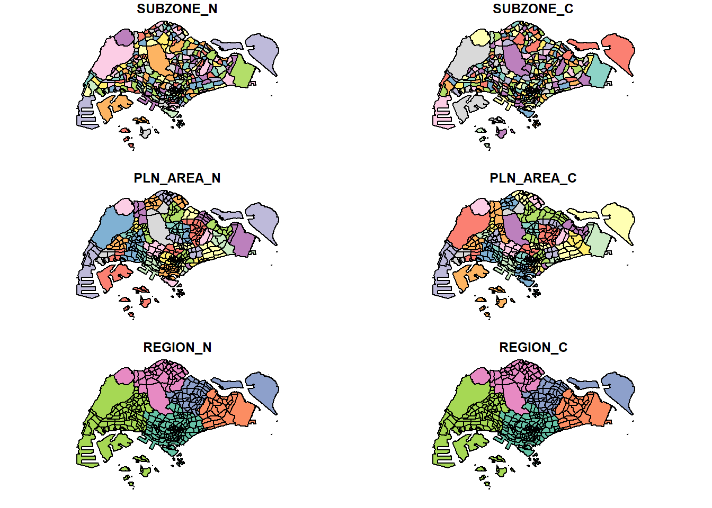
2.3.1.6 Removal of internal boundaries
In this analysis, we also want just the singapore boundary so that we can see what grab taxis are within Singapore. We might not need all the internal breakup and boundaries and constantly using that might clog up processing power.
However, there might be use cases where we need the mpsz object in sf type. So let’s save it first by assigning it to another variable:
mpsz_sf <- mpszNow let’s remove the interal boudaries:
mpsz <- mpsz %>%
st_union()Let’s plot mpsz now to see the external boundary:
plot(mpsz)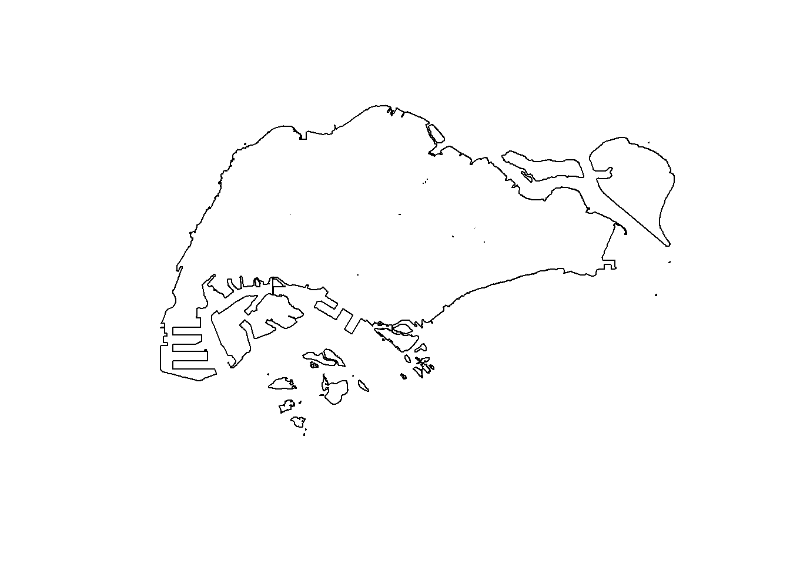
Yay! We have got it.
2.3.2 Road Data Set
2.3.2.1 Coordinate Reference System
Let us check the coordinate reference system.
st_geometry(roads)Geometry set for 1765176 features
Geometry type: LINESTRING
Dimension: XY
Bounding box: xmin: 99.66041 ymin: 0.8021131 xmax: 119.2601 ymax: 7.514393
Geodetic CRS: WGS 84
First 5 geometries:We can see it is not in EPSG:3414, therefore, we do a transformation to assign it the right code. We have explained why we do this under the mpsz section.
roads <- st_transform(roads,
crs = 3414)2.3.2.2 Constriction of roads to Singapore
The data of the roads is related to roads in multiple countries on top of Singapore. Let us constrict it to just to have roads in Singapore as Singapore is our area of study.
Besides, this will reduce the amount of data tremedously and allow the processing to be faster.
roads_inSG <- st_intersection(roads, mpsz)2.3.2.3 Validity Of Geometries
length(which(st_is_valid(roads_inSG) == FALSE))[1] 0Luckily, all geometries are validity!
2.3.2.4 Missing Values
# Use the filter function to check for empty rows
empty_rows <- roads_inSG %>%
filter_all(all_vars(is.na(.)))
# Check if there are any empty rows
if (nrow(empty_rows) > 0) {
cat("There are empty rows in the sf data tibble.\n")
} else {
cat("There are no empty rows in the sf data tibble.\n")
}There are no empty rows in the sf data tibble.Luckily, there are no empty values again!
2.3.3 Grab Posisi
Now let’s wrangle the data of Grab posisi.
2.3.3.1 Convert Data type
Here we convert the int data type to date time data type. We are not using mutate, as we are over writing the data field in the file.
grab$pingtimestamp <-as_datetime(grab$pingtimestamp)2.3.3.2 Origin Datapoints of Each Ride
In this data, the location and specifics of each car ride is sent to the server every minute. Here, we only want the data for the origin point for each ride. So let’s wrangle the data this way:
#origin
grabOrigin <- grab %>% #use df
group_by(trj_id) %>% #group according to trj_id
arrange(pingtimestamp) %>% #sort according to timestamp asc (default)
filter(row_number()==1) %>% #the first coordinate for every trip should be the origin
mutate(weekday = wday(pingtimestamp, label=TRUE, abbr=TRUE),
start_hr = factor(hour(pingtimestamp)),
day = factor(mday(pingtimestamp)))2.3.3.2.1 Code Walkthrough
Let me explain step by step so you understand this better!
grabOrigin <- grab
Here we take the data from the grab data and wrangle it and assign it to grabOrigin.
group_by(trj_id)
When we use group_by, we can group the different data records in the data by one column, in this case, trj_id. Here, each group will have rows with the same trj_id, meaning all of the rows in one group will relate to one trip.
arrange(pingtimestamp)
Here in each group, we arrange all the rows according to the time stamp in an ascending order. Hence, the first row will be the origin location the grab taxi departs from.
filter(row_number()==1)
Filter method is used to filter out the rows that match a criteria.
Here, we take the first row only - only the origin location the taxi departs from matters.
mutate(weekday = wday(pingtimestamp, label=TRUE, abbr=TRUE)
Mutate function can be used to create a new column. In this case, we create a column called weekday. The wday function extracts the weekday values from pingtimestamp. We fill the weekday column with the value generated by the wday function.
start_hr = factor(hour(pingtimestamp))
Here, we create a column called start_hr. We use a function called hour to extract the hour from the pingtimestamp and then place it into the start_hr column.
day = factor(mday(pingtimestamp)))
Here, we create a column called day. We use a function called mday to extract the day of the month from the pingtimestamp and then place it into the day column.
I hope the code is clearer now, and you understand how we get the origin data points of each ride.
2.3.3.3 Destination Datapoints of Each Ride
Let’s do almost the same to get the destination of each trip.
# get end
destination_df <- grab %>% #use df
group_by(trj_id) %>% #group according to trj_id
arrange(desc(pingtimestamp)) %>% #sort according to timestamp asc (default)
filter(row_number()==1) %>% #the first coordinate for every trip should be the origin
mutate(weekday = wday(pingtimestamp, label=TRUE, abbr=TRUE),
end_hr = factor(hour(pingtimestamp)),
day = factor(mday(pingtimestamp)))The code is mostly the same except the arrange(desc()) where we arranged the rows descendingly
2.3.3.4 Coordinate reference frame
grabOrigin <- st_as_sf(grabOrigin, coords = c("rawlng", "rawlat"), crs = 4326) %>%
st_transform(crs = 3414)destination_df <- st_as_sf(destination_df, coords = c("rawlng", "rawlat"), crs = 4326) %>%
st_transform(crs = 3414)Again, we transform the coordinate reference system into SVY21.
Let’s check if it’s been transformed correctly.
st_geometry(grabOrigin) Geometry set for 28000 features
Geometry type: POINT
Dimension: XY
Bounding box: xmin: 3661.475 ymin: 25201.14 xmax: 49845.23 ymax: 49685.08
Projected CRS: SVY21 / Singapore TM
First 5 geometries:st_geometry(destination_df)Geometry set for 28000 features
Geometry type: POINT
Dimension: XY
Bounding box: xmin: 3638.685 ymin: 25350.05 xmax: 50024.92 ymax: 49469.41
Projected CRS: SVY21 / Singapore TM
First 5 geometries:And both have been transformed well!
2.3.3.5 Validity Of Geometries
length(which(st_is_valid(grabOrigin) == FALSE))[1] 0length(which(st_is_valid(destination_df) == FALSE))[1] 0Luckily all geometries are valid!
2.3.3.6 Drop Z coordinate
grabOrigin <- st_zm(grabOrigin)destination_df <- st_zm(destination_df)2.3.3.7 Create ppp objects
grabOriginPPP <- as.ppp(grabOrigin)destination_dfPP <- as.ppp(destination_df)plot(grabOriginPPP)
Let’s look at the summary statistics of the newly created ppp object
summary(grabOriginPPP)Marked planar point pattern: 28000 points
Average intensity 2.47621e-05 points per square unit
Coordinates are given to 3 decimal places
i.e. rounded to the nearest multiple of 0.001 units
marks are of type 'character'
Summary:
Length Class Mode
28000 character character
Window: rectangle = [3661.47, 49845.23] x [25201.14, 49685.08] units
(46180 x 24480 units)
Window area = 1130760000 square unitsplot(destination_dfPP)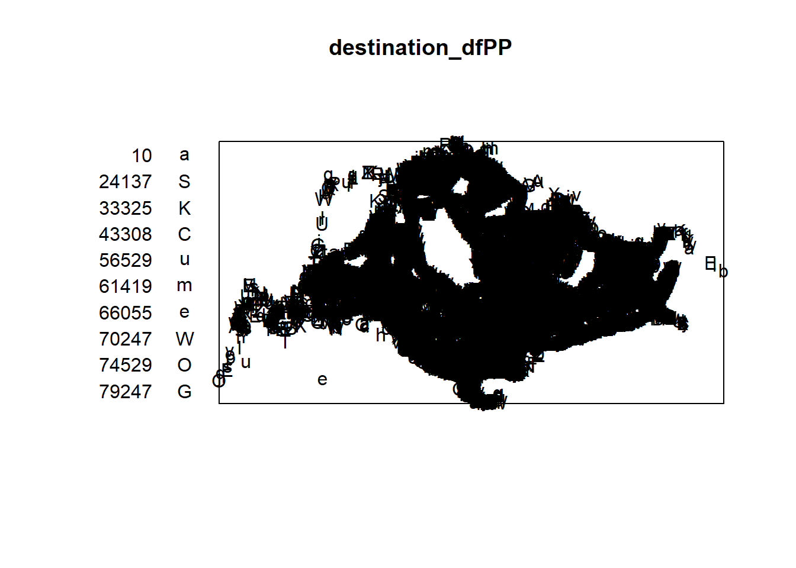
Let’s look at the summary statistics of the newly created ppp object
summary(destination_dfPP)Marked planar point pattern: 28000 points
Average intensity 2.502667e-05 points per square unit
Coordinates are given to 3 decimal places
i.e. rounded to the nearest multiple of 0.001 units
marks are of type 'character'
Summary:
Length Class Mode
28000 character character
Window: rectangle = [3638.69, 50024.92] x [25350.05, 49469.41] units
(46390 x 24120 units)
Window area = 1118810000 square units2.3.3.8 Handling duplicate points
We are looking at a huge area, and having multiple points in one area might make us miss important details.
So let us check if there are duplicate points.
any(duplicated(grabOrigin))[1] FALSEany(duplicated(destination_df))[1] FALSE2.3.3.9 Conversion To Owin Objects
We do this to define the region we can do spatial point analysis in. Let’s take a refresher - the points are the locations of our grab taxis. So, in this case, we want to define Singapore as the region we execute spatial point analysis in.
mpsz_owin <- as.owin(mpsz)grabOriginPPP_SG <- grabOriginPPP[mpsz_owin]destination_dfPPP_SG <- destination_dfPP[mpsz_owin]3.Visualization & Spatial Pattern Analysis
Let’s plot some of our data to understand this better!
3.1 Location Visualizations
Here we visualise the origin and destination locations of grab to understand them better!
3.1.1 Grab origin in Singapore
We can see where the grabs rides generally start off from in Singapore.
tmap_mode("plot")
tm_shape(mpsz_sf) +
tm_polygons() +
tm_shape(grabOrigin) +
tm_dots()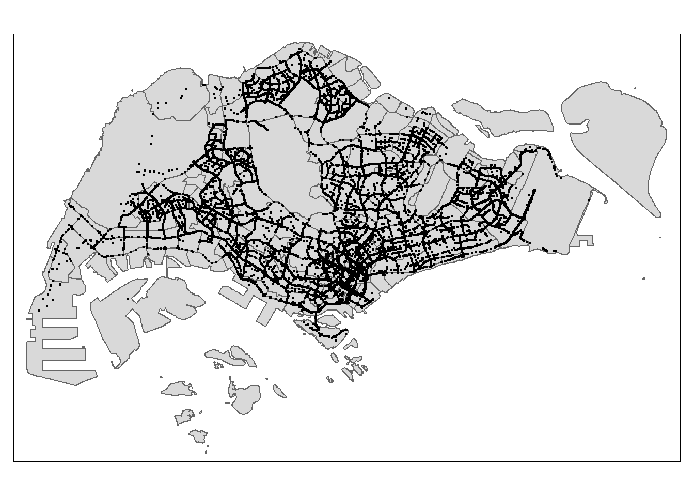
3.1.2 Grab destination in Singapore
Here, we can see where the grab rides generally end in Singapore.
tmap_mode("plot")
tm_shape(mpsz_sf) +
tm_polygons() +
tm_shape(destination_df) +
tm_dots()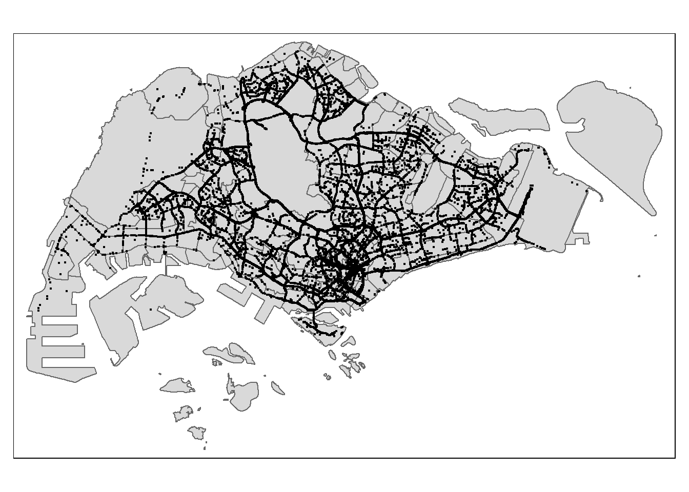
3.2 Spatial Analysis
3.2.1 Net outflow from northern Singapore
3.2.1.1 Method 1 of analysis
Though not conclusive, from staring at the before and after pictures, we can see that there are lesser dots in the extreme east in the destination map than the origin map.
Let’s prove this through code!
This was not done much in class and is new, but good for exploration!
Firstly, get’s create a bounding box for the northern part of Singapore to extract the northern part of Singapore as we want to study it.
Let’s extract the north region in Singapore
north <- mpsz_sf %>%
filter(REGION_N == "NORTH REGION")Let’s see what “north” of Singapore looks like:
plot(north)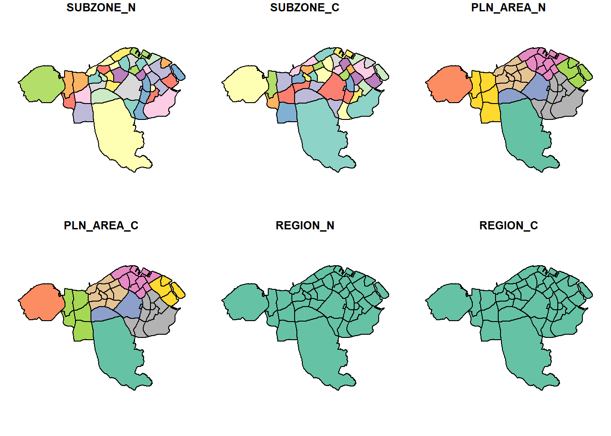
plot(north)Now let’s see the number of grab cars that are leaving the north:
carsOriginInNorth <- st_intersection(grabOrigin, north)carsOriginInNorth <- st_intersection(grabOrigin, north)Let’s get the number now
carsOriginInNorthSimple feature collection with 4547 features and 16 fields
Geometry type: POINT
Dimension: XY
Bounding box: xmin: 13681.67 ymin: 35382.98 xmax: 31339.97 ymax: 49685.08
Projected CRS: SVY21 / Singapore TM
# A tibble: 4,547 × 17
trj_id driving_mode osname pingtimestamp speed bearing accuracy weekday
* <chr> <chr> <chr> <dttm> <dbl> <int> <dbl> <ord>
1 14555 car ios 2019-04-10 09:15:04 10.6 107 10 Wed
2 79752 car ios 2019-04-10 10:17:35 7.52 99 6 Wed
3 77697 car ios 2019-04-11 04:44:09 2.12 143 12 Thu
4 10587 car ios 2019-04-11 10:23:59 6.42 101 8 Thu
5 45173 car andro… 2019-04-11 13:08:29 12.0 85 3.9 Thu
6 76870 car ios 2019-04-12 06:19:28 7.31 96 6 Fri
7 79546 car andro… 2019-04-12 07:22:33 17.0 83 3.9 Fri
8 66711 car ios 2019-04-12 08:10:38 18.3 12 8 Fri
9 35891 car ios 2019-04-13 03:35:23 2.71 354 5 Sat
10 76149 car andro… 2019-04-13 10:05:54 17.6 86 3.9 Sat
# ℹ 4,537 more rows
# ℹ 9 more variables: start_hr <fct>, day <fct>, SUBZONE_N <chr>,
# SUBZONE_C <chr>, PLN_AREA_N <chr>, PLN_AREA_C <chr>, REGION_N <chr>,
# REGION_C <chr>, geometry <POINT [m]>We can see 4547 cars are leaving the North
tmap_mode("plot")
tm_shape(north) +
tm_polygons() +
tm_shape(carsOriginInNorth) +
tm_dots()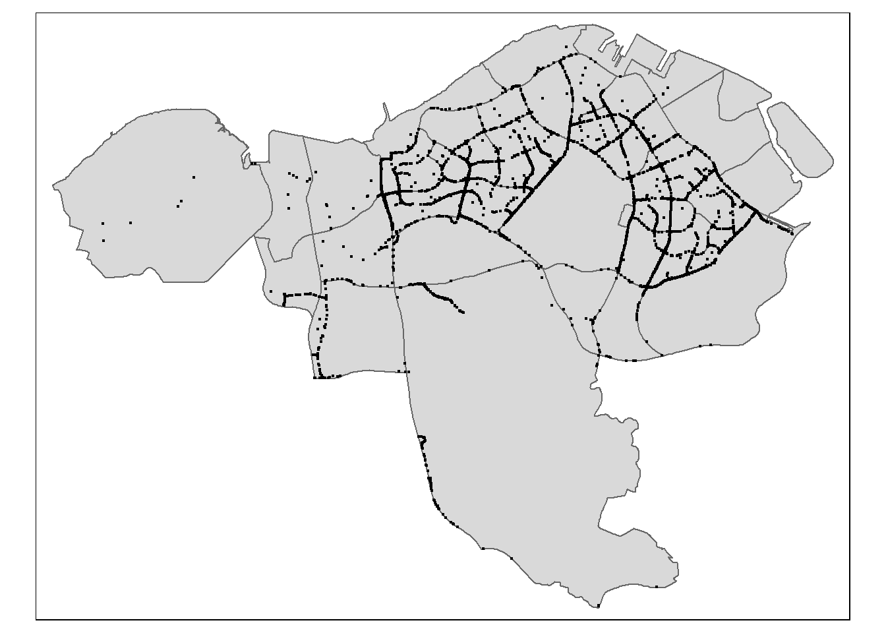
Now, let’s see the number of cars arriving to the north:
carsDestInNorth <- st_intersection(destination_df, north)Let’s get the number now:
carsDestInNorthSimple feature collection with 4242 features and 16 fields
Geometry type: POINT
Dimension: XY
Bounding box: xmin: 13369.5 ymin: 35350.07 xmax: 31403.56 ymax: 49469.41
Projected CRS: SVY21 / Singapore TM
# A tibble: 4,242 × 17
trj_id driving_mode osname pingtimestamp speed bearing accuracy weekday
* <chr> <chr> <chr> <dttm> <dbl> <int> <dbl> <ord>
1 69056 car andro… 2019-04-21 05:02:36 13.2 348 3.9 Sun
2 49387 car ios 2019-04-21 04:21:53 4.07 283 8 Sun
3 47116 car ios 2019-04-20 10:42:37 14.4 280 10 Sat
4 68012 car andro… 2019-04-20 08:27:09 14.2 266 5 Sat
5 10894 car andro… 2019-04-18 11:50:43 0 0 3 Thu
6 74071 car andro… 2019-04-18 10:58:28 15.7 348 3.9 Thu
7 9325 car ios 2019-04-15 02:47:36 7.37 349 5 Mon
8 80203 car andro… 2019-04-11 18:29:44 17.3 3 4 Thu
9 76951 car ios 2019-04-21 23:47:07 10.3 26 6 Sun
10 19847 car andro… 2019-04-21 23:40:18 8.20 26 11 Sun
# ℹ 4,232 more rows
# ℹ 9 more variables: end_hr <fct>, day <fct>, SUBZONE_N <chr>,
# SUBZONE_C <chr>, PLN_AREA_N <chr>, PLN_AREA_C <chr>, REGION_N <chr>,
# REGION_C <chr>, geometry <POINT [m]>We can see that 4242 cars are leaving the North
Let’s see visually how it looks like:
tmap_mode("plot")
tm_shape(north) +
tm_polygons() +
tm_shape(carsDestInNorth) +
tm_dots()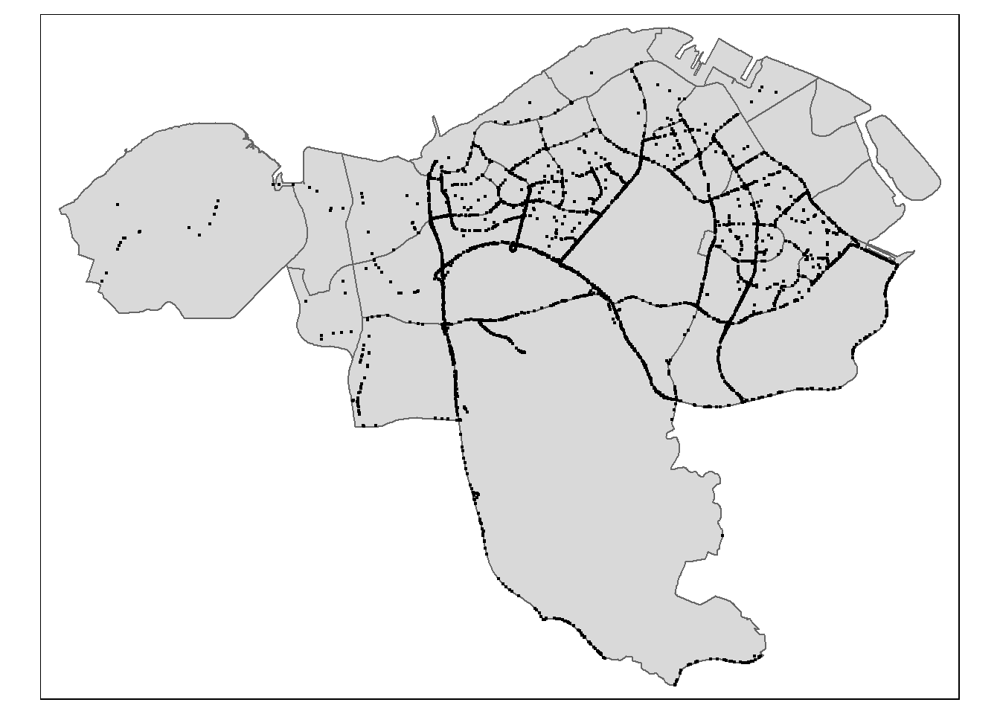
Though it may not be clear visually, we can see that more cars are leaving the North (4547) than they are going to the North (4242). That makes sense as the North is largely a residential area, and people generally live there more than work there. However, we notice that the difference isn’t too great, and that could be attributed to the fact that the north has slowly been developing many industrial estates that people might work at.
One issue with the data above is that there is a huge portion of area that is Considered “North” is not actually a region considered to be the north.
Refer to the picture below:

This area is the central catchment area, with parks and large bodies of water. When thinking of “North Of Singapore”, people generally do not consider the central catchment area as such. And nor is it a place people generally work and live at.
So let’s do a second round of analysis and remove it.
3.2.1.2 Method 2 of analysis
For this part, I have used this data : Master Plan 2019 Subzone Boundary (No Sea) from Data.gov.sg. I have not shown the import of wrangling of this data on this page, due to the lack of memory and processing space. However, you can wrangle this data the same way I have wrangled the current mpsz data!
Firstly, get’s create a bounding box for the northern part of Singapore to extract the northern part of Singapore as we want to study it.
These coordinates are not random. I have found them on google maps by selecting points and some trial and error to correctly extract the northern area.
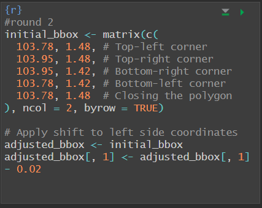
Now, let’s convert the coordinate reference system of the bounding box to match that of mpsz_sf which is SVY21. After that, we will crop Singapore to just the area specified by the bounding box.
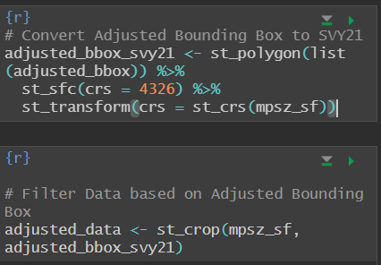
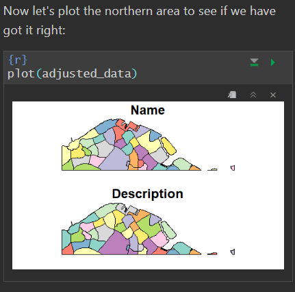
And we have!
Now, let’s see the intersection of grab locations when leaving the northern Singapore.
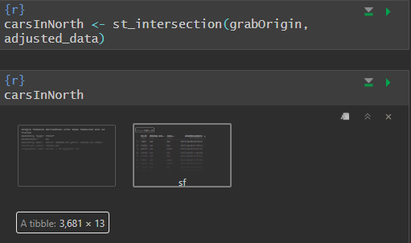
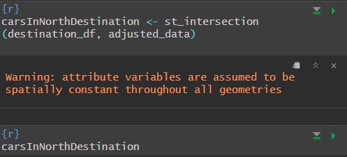
Here we can see that our hypothesis is indeed correct. The number of cars starting at north was 3681 while the number of cars arriving at the north was 2838. The gap between the people leaving the North to coming to the north is much greater when i reduced the study area to areas actually relevent to peoplei n the north.
This aligns with common knowledge that the northern parts of Singapore are more residential, and in the mornings, people generally tend to leave the northern areas where they live to go to other parts of Singapore where they work.
3. Kernel Density Estimation
Let’s now talk about kernel density estimation.
What does it mean?
In the maps we have seen above, there are many points scattered throughout Singapore. They might be scattered randomly, or clustered together, distributed evenly as shown below:
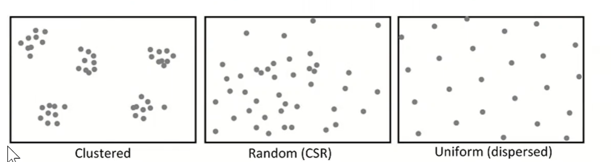
And moreover, different parts of Singapore might have a different distribution of points. For example, the grabs leaving from yishun might be clustered but the grabs leaving the CBD might be uniform/dispersed.
It is important to understand the distribution of grabs in different locations to understand people’s routines and frequented places.
In summary, the KDE provides a value to ascertain how dense with points different locations in a region are
How do we calculate kernel density estimation?
Let’s think of this using an analogy. Place a hill over each point, with the peak of the hill right above the point. Hence, the base of the hill will cover that point, and its surrounding areas (maybe even other points). With there being multiple points, the bases of the many hills will overlap. The more the overlap, the more points there are, and the denser that area.
Another thing to take note is that there might be multiple hills close to one another, and so, it is important that the difference in KDE between the two hills is not too sharp. If the points are close , or relatively close together, the points should have somewhat of a similar KDE value. Hence, how we smoothen the hill to ensure a gradual change in KDE value is very important.
There are two variables that we can change when calculating the KDE:
base of the hill / sigma
- Fixed bandwidth - base of each hill is fixed
how we smoothen the hill/ kernel - base of each hill is different
As we change these two variables, we would get different results. Let’s try some variations now.
Firstly, let’s try automatic bandwidth.
3.1 Computing KDE with automatic bandwidth
We use automatic bandwidths in this section, where the base of each hill is of different size. Automatic bandwidths can be good in areas where points are really clustered to one another. Hence, sublocations with more points can have smaller based hills to detect small nuanced changes in density. This detection might not be possible if all hills had the same sized hill bases, as the tiny differences in density can be missed out.
3.1.1 Computing KDE with automatic bandwidth and gaussian kernel
There are different ways to calculate the automatic bandwidth. Let’s try some of them/
3.1.1.1 Using bw.diggle()
Here we calculate the density of grabs that are just leaving their location.
grabOriginPPP_SG_km <- rescale(grabOriginPPP_SG, 1000, "km")
kde_grabOriginSG_bw_gaus <- density(grabOriginPPP_SG_km,
sigma=bw.diggle,
edge=TRUE,
kernel="gaussian") par(mfrow = c(1, 1), mar = c(1, 1, 1, 1))
plot(kde_grabOriginSG_bw_gaus)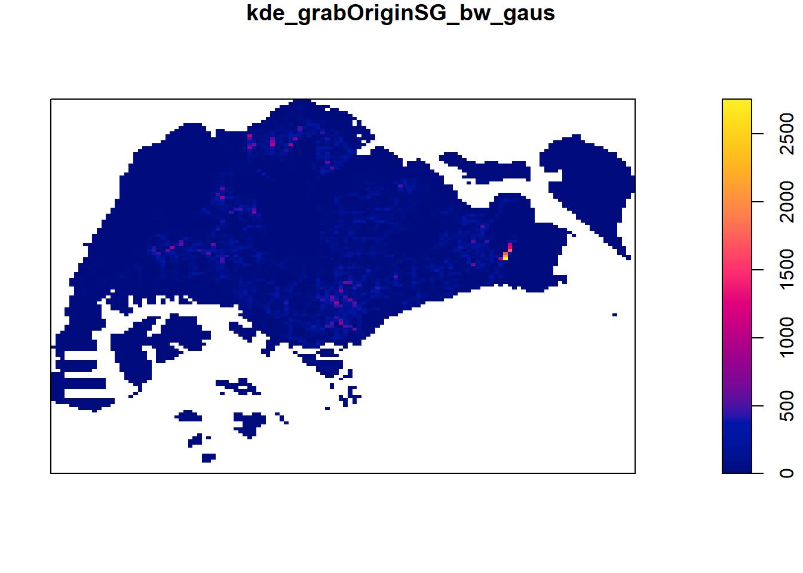
Here we calculate the density of grabs that are just arriving to their location.
grabDestinationPPP_SG <- rescale(destination_dfPPP_SG, 1000, "km")
kde_grabDestSG_bw_gaus <- density(grabDestinationPPP_SG,
sigma=bw.diggle,
edge=TRUE,
kernel="gaussian")par(mfrow = c(1, 1), mar = c(1, 1, 2, 2))
plot(kde_grabDestSG_bw_gaus)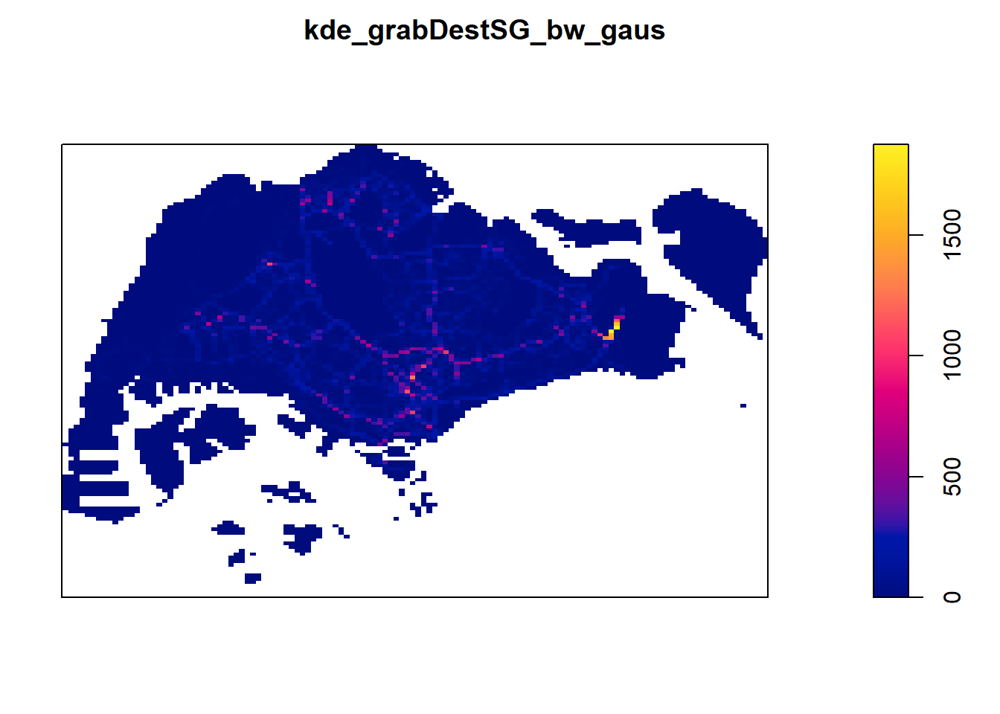
The southern part of Singapore is more dense with grab cars as their destination, than their origin. This means that more cars come to the southern part of Singapore than they leave, and that makes sense as the CBD is located there, and a lot of workplaces are situated there. Many people would come to the CBD to work daily, leading to the high densities.
3.1.1.1 Using bw.CvL()
bw.CvL(grabOriginPPP_SG) sigma
6801.213 3.1.1.2 Using bw.scott()
bw.scott(grabOriginPPP_SG) sigma.x sigma.y
1587.8068 935.0244 3.1.1.3 Using bw.ppl()
bw.ppl(grabOriginPPP_SG) sigma
382.9118 kde_grabOriginSG_ppl_gaus <- density(grabOriginPPP_SG_km, sigma=bw.ppl, edge=TRUE, kernel="gaussian")par(mfrow = c(1, 1), mar = c(1, 1, 1, 1))
plot(kde_grabOriginSG_bw_gaus, main = "bw.diggle")plot(kde_grabOriginSG_ppl_gaus, main = "bw.ppl")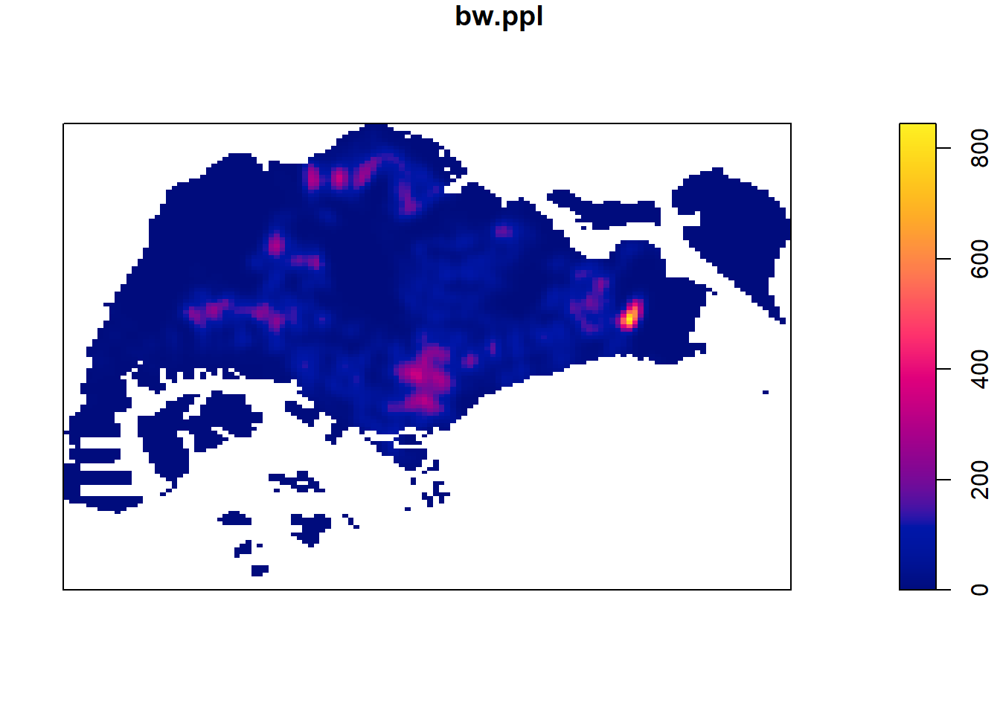
We can see that the densities are more clearly marked when using bw.ppl than when using bw.diggle. This is because the bandwidth, or the base of the hill is much smaller. Hence, the nuances and differences in densities can be more easily picked up.
Baddeley et. (2016) suggested the use of the bw.ppl() algorithm because in ther experience it tends to produce the more appropriate values when the pattern consists predominantly of tight clusters.
3.1.2 Computing KDE with automatic bandwidth and various kernels
AS mentioned before, when we use various kernels, we are using different methods to smoothen out the hill to ensure that the differences between two hills aren’t too sharp.
The quartic kernel makes a flat disc-shaped hill, only considering points close to each other.
par(mfrow = c(1, 1), mar = c(1, 1, 1, 1))
plot(density(grabOriginPPP_SG_km,
sigma=bw.ppl,
edge=TRUE,
kernel="epanechnikov"),
main="Epanechnikov")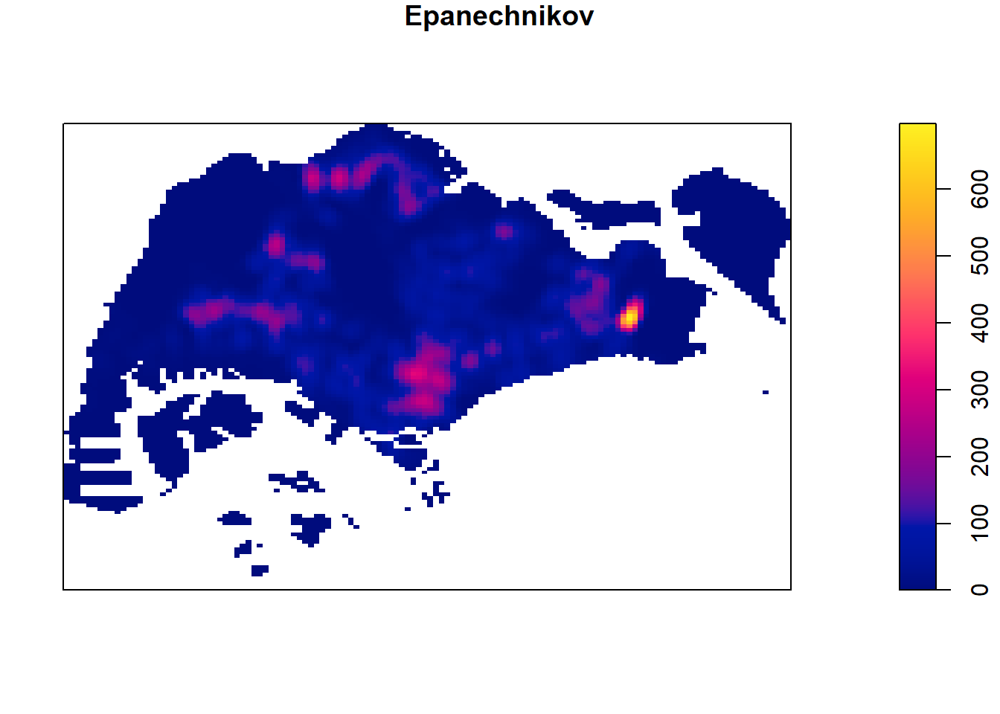
The quartic kernel is similar to epanechnikov the but makes wider hills.
par(mfrow = c(1, 1), mar = c(1, 1, 1, 1))
plot(density(grabOriginPPP_SG_km,
sigma=bw.ppl,
edge=TRUE,
kernel="quartic"),
main="Quartic")The Gaussian kernel is smooth and assigns higher weights to nearby points.
par(mfrow = c(1, 1), mar = c(1, 1, 1, 1))
plot(density(grabOriginPPP_SG_km,
sigma=bw.ppl,
edge=TRUE,
kernel="gaussian"),
main="Gaussian")he Disc kernel treats all points within a certain distance equally, making a simple, flat circle around each point.
par(mfrow = c(1, 1), mar = c(1, 1, 1, 1))
plot(density(grabOriginPPP_SG_km,
sigma=bw.ppl,
edge=TRUE,
kernel="disc"),
main="Disc")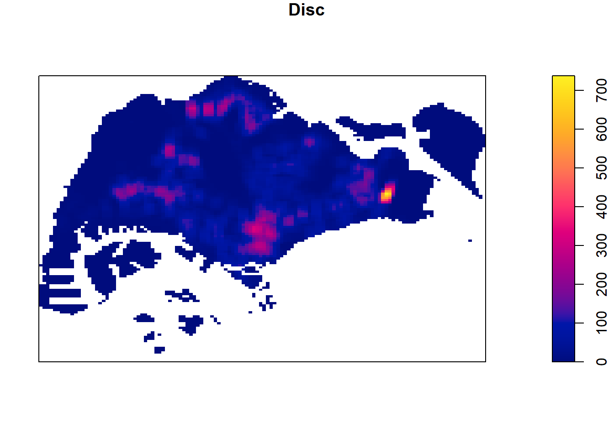
3.2 Comparing Spatial Point Patterns using KDE
3.2.1 Extracting study areas
From our analysis before, we could see that the southern part of Singapore was highly populated due to the CBD and numerous other workplaces. However, we could only see a high level picture of it, now, let’s dive a little deeper and see which areas in the southern part of Singapore were more densely populated with grab cars then the others.
By analysing this, we can somewhat deduce which areas have more workplaces than others!
downtown_core <- mpsz_sf %>%
filter(PLN_AREA_N == "DOWNTOWN CORE")
river_valley <- mpsz_sf %>%
filter(PLN_AREA_N == "RIVER VALLEY")
orchard <- mpsz_sf %>%
filter(PLN_AREA_N == "ORCHARD")plot(st_geometry(downtown_core), main = "downtown_core")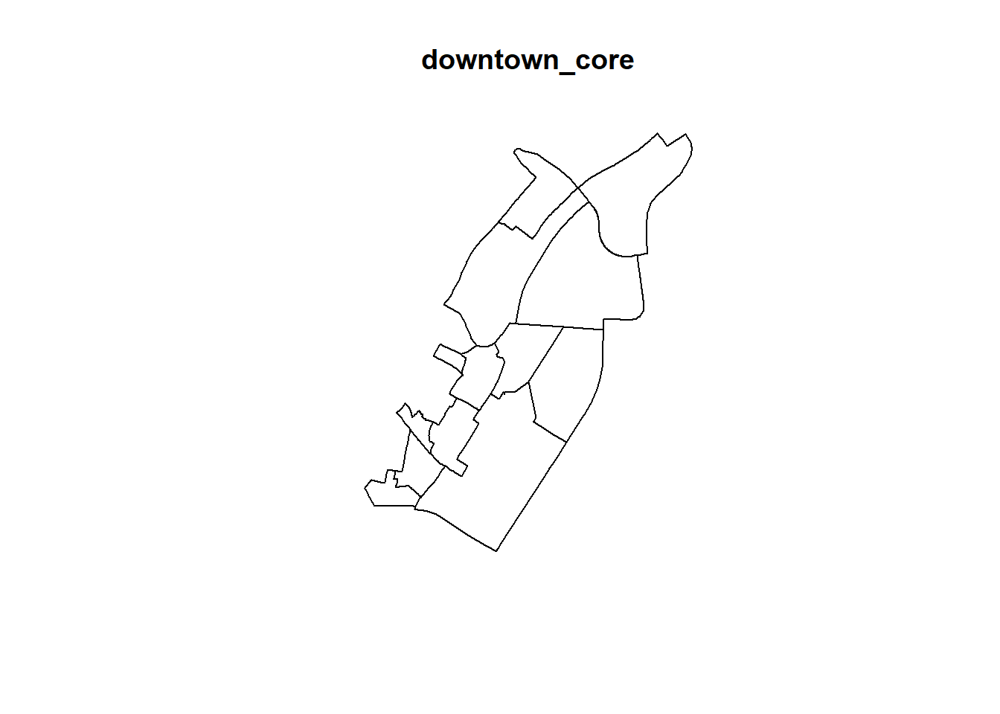
par(mfrow = c(1, 1), mar = c(1, 1, 1, 1))
plot(st_geometry(river_valley), main = "river_valley")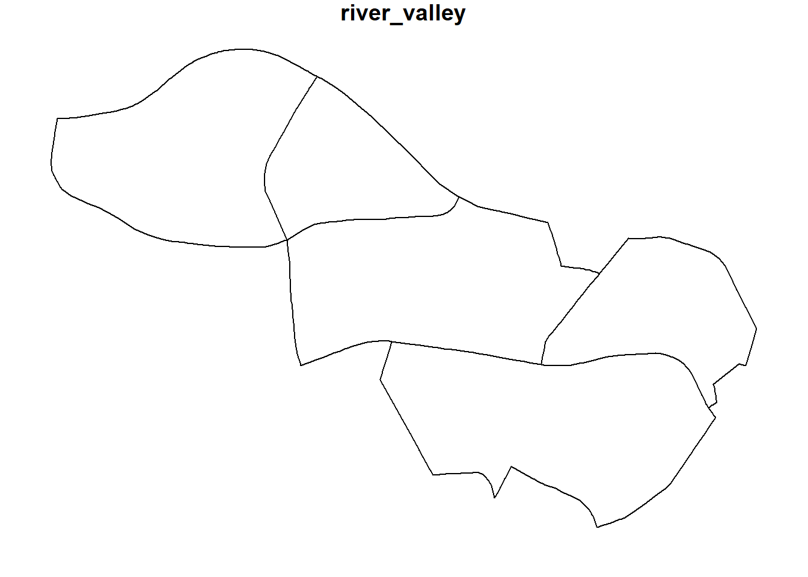
par(mfrow = c(1, 1), mar = c(1, 1, 1, 1))
plot(st_geometry(orchard), main = "orchard")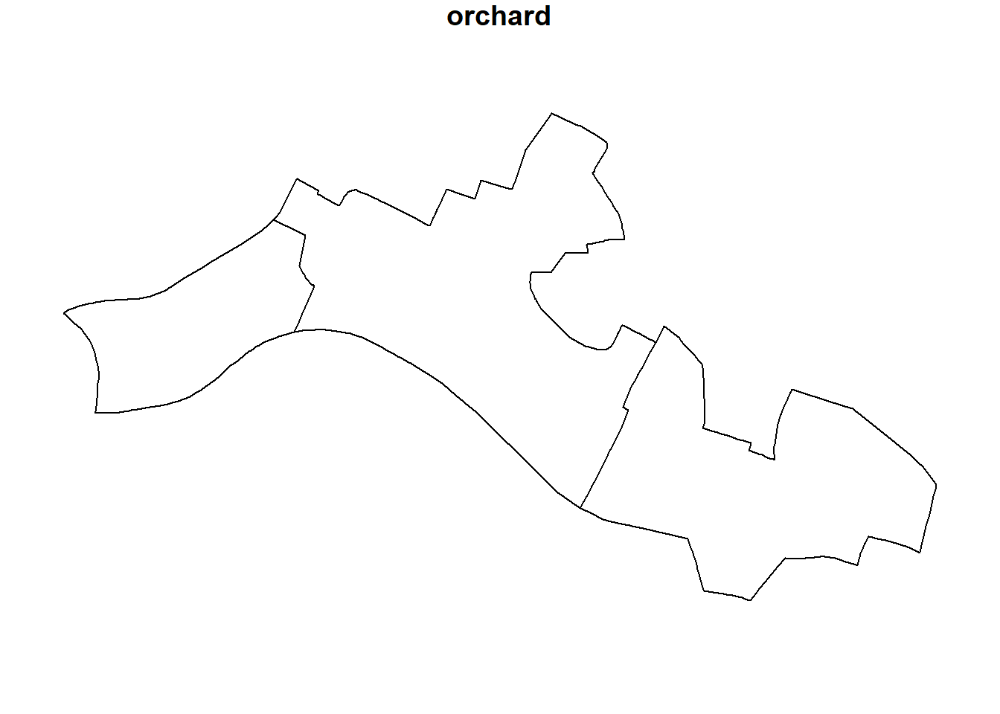
3.2.2 Combining grab points and the study areas
3.2.2.1 Create Owin Object
downtown_core <- as.owin(downtown_core)orchard <- as.owin(orchard)river_valley <- as.owin(river_valley)3.2.2.2 Combination
Here , we are deriving the points that would be located in each of the locations.
grabDestinationPPP_downtown <- destination_dfPP[downtown_core]
grabDestinationPPP_orchard <- destination_dfPP[orchard]
grabDestinationPPP_river <- destination_dfPP[river_valley]Let’s rescale it, as the default was in meters.
grabDestinationPPP_downtown = rescale(grabDestinationPPP_downtown, 1000, "km")
grabDestinationPPP_orchard = rescale(grabDestinationPPP_orchard, 1000, "km")
grabDestinationPPP_river = rescale(grabDestinationPPP_river, 1000, "km")3.2.2.3 Plot points
Here, we just plot the points of grab cars arriving. Later, we will plot the KDE.
Here we plot grab cars arriving in downtown.
par(mfrow = c(1, 1), mar = c(1, 1, 1, 1))
plot(grabDestinationPPP_downtown)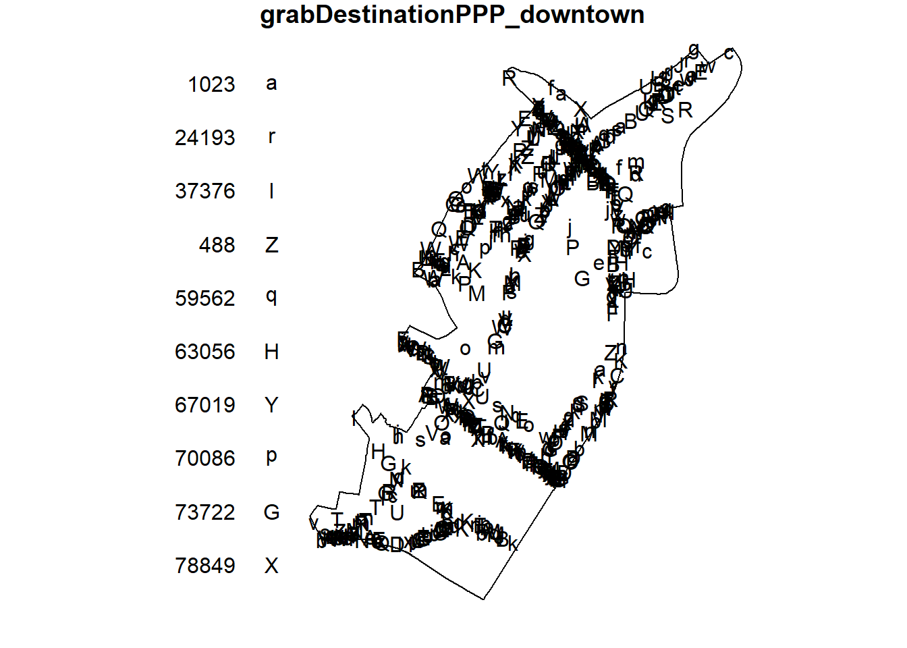
Here we plot grab cars arriving in orchard.
par(mfrow = c(1, 1), mar = c(1, 1, 1, 1))
plot(grabDestinationPPP_orchard)
Here we plot grab cars arriving in river valley.
par(mfrow = c(1, 1), mar = c(1, 1, 1, 1))
plot(grabDestinationPPP_river)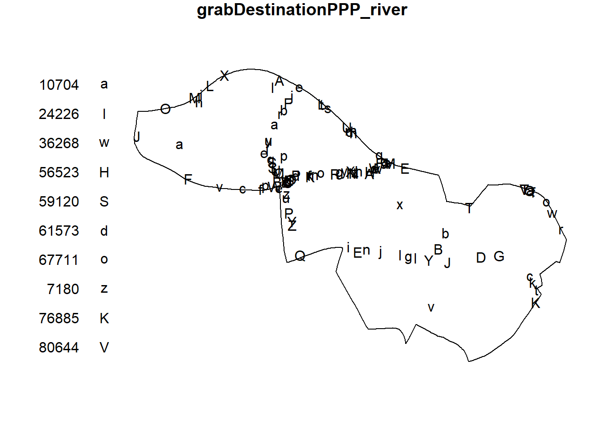
When conducting analysis in a more granular way, we get to see two things
- The differences in grab cars , and by extension workplaces, between different areas in southern Singapore
- We can see from these images that downtown is the more popular location in all of the southern parts of singapore that we have analysed.
- We see the distribution of grab cars within each area itself, telling us which locations are more popular, or have drop offs.
- For example, in Orchard, we can see that the borders of Orchard are more popular.
3.2.3 KDE in central areas
Now let’s compute and plot the KDE in different areas in southern Singapore. This can give us a better idea of the distribution of grab car destinations.
Let’s calculate KDE for downtown.
par(mfrow = c(1, 1), mar = c(1, 1, 1, 1))
plot(density(grabDestinationPPP_downtown,
sigma=bw.diggle,
edge=TRUE,
kernel="gaussian"),
main="Downtown")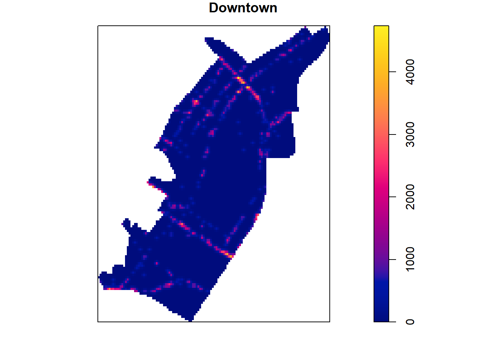
Let’s calculate KDE for orchard.
par(mfrow = c(1, 1), mar = c(1, 1, 1, 1))
plot(density(grabDestinationPPP_orchard,
sigma=bw.diggle,
edge=TRUE,
kernel="gaussian"),
main="Orchard")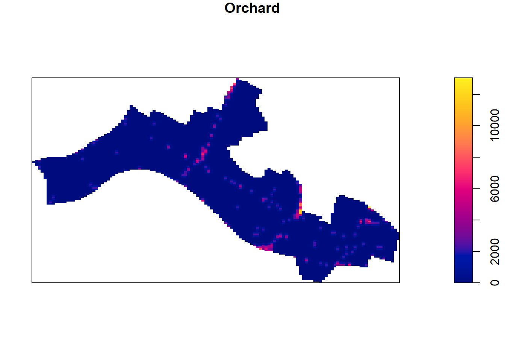
Let’s calculate KDE for river valley.
par(mfrow = c(1, 1), mar = c(1, 1, 1, 1))
plot(density(grabDestinationPPP_river,
sigma=bw.diggle,
edge=TRUE,
kernel="gaussian"),
main="River Valley")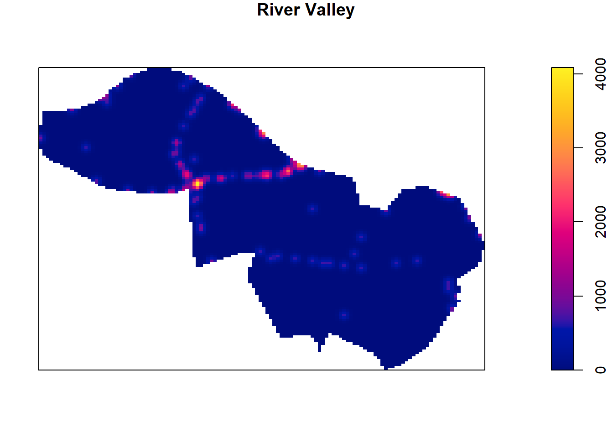
#from here
3.2.4 Converting KDE output into raster format
Why do we do this?
This is mainly just for mapping purposes. Conversion into raster format allows us to visualise the KDE in a pixelated format, allowing us to better understand spatial point patterns.
kde_grabOriginSG_ppl_gaus_conv <- as.SpatialGridDataFrame.im(kde_grabOriginSG_ppl_gaus) spplot(kde_grabOriginSG_ppl_gaus_conv)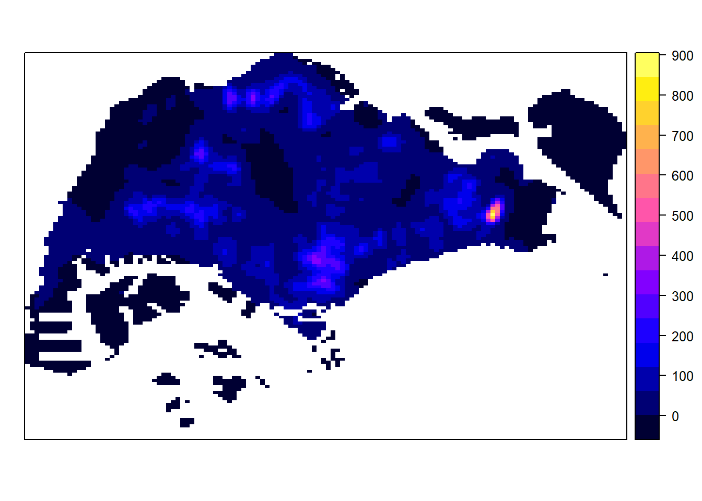
Next, we will convert the gridded kernal density objects into RasterLayer object by using raster() of raster package.
kde_grabOriginSG_ppl_gaus_conv <- raster(kde_grabOriginSG_ppl_gaus_conv)Let’s look at the gridded kernel desnity object
kde_grabOriginSG_ppl_gaus_convclass : RasterLayer
dimensions : 128, 128, 16384 (nrow, ncol, ncell)
resolution : 0.419757, 0.2695907 (x, y)
extent : 2.667538, 56.39644, 15.74872, 50.25633 (xmin, xmax, ymin, ymax)
crs : NA
source : memory
names : v
values : -8.533748e-14, 845.4849 (min, max)Notice that the CRS is NA so lets’ set it to SVY21. Remember, we convert everything to the same coordinate reference system!
projection(kde_grabOriginSG_ppl_gaus_conv) <- CRS("+init=EPSG:3414")3.2.5 Displaying KDE on open streetmap of Singapore
tm_basemap("OpenStreetMap") +
tm_shape(kde_grabOriginSG_ppl_gaus_conv) +
tm_raster("v", palette = "PuRd", alpha=0.65) +
tm_layout(legend.position = c("right", "bottom"),
main.title = "Grab's Origin KDE ",
frame = FALSE)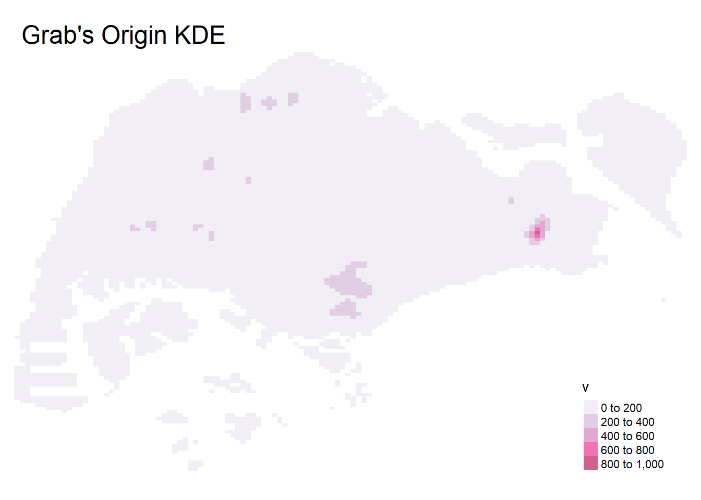
From this, we know that the areas we could be more interested in are the East. the sourthern part of Singapore and Northern part of Singapore. We see that the densities are higher there.
4.Network Kernel Density Estimation
Let’s now carry out network kernel density estimation.
What does this mean?
It is similar to the kernel density estimation that we have done earlier. Except, this time, we take the roads and network of the place into account as well. We not only want to see where the grab origins are the highest, we want to see near which particular roads they might be the highest. This can be very important for spatial planning and understanding human behaviour.
4.1 Extracting study areas
As mentioned before there are only three areas we are concerned with ar the moment. This is also better for processing and memory power and we do not have to load and process the entire roads dataset.
4.1.1 Extracting the North
4.1.1.1 Extracting the North from mpsz
Here, we are extracting the north from mpsz. Thankfully we already have it from previous processing. Let’s print it.
northSimple feature collection with 41 features and 6 fields
Geometry type: POLYGON
Dimension: XY
Bounding box: xmin: 12386.29 ymin: 35330.11 xmax: 32377.19 ymax: 50256.33
Projected CRS: SVY21 / Singapore TM
First 10 features:
SUBZONE_N SUBZONE_C PLN_AREA_N PLN_AREA_C
1 PANG SUA SKSZ04 SUNGEI KADUT SK
2 KHATIB YSSZ08 YISHUN YS
3 MANDAI WEST MDSZ01 MANDAI MD
4 YISHUN SOUTH YSSZ04 YISHUN YS
5 LOWER SELETAR YSSZ05 YISHUN YS
6 MANDAI ESTATE MDSZ03 MANDAI MD
7 YISHUN CENTRAL YSSZ01 YISHUN YS
8 GALI BATU SKSZ03 SUNGEI KADUT SK
9 SPRINGLEAF YSSZ06 YISHUN YS
10 CENTRAL WATER CATCHMENT CCSZ01 CENTRAL WATER CATCHMENT CC
REGION_N REGION_C geometry
1 NORTH REGION NR POLYGON ((19156.47 44276.42...
2 NORTH REGION NR POLYGON ((27819.05 44960.39...
3 NORTH REGION NR POLYGON ((24684.68 44271.39...
4 NORTH REGION NR POLYGON ((29187.4 44991.3, ...
5 NORTH REGION NR POLYGON ((30918.91 45252.69...
6 NORTH REGION NR POLYGON ((27119.56 45071.12...
7 NORTH REGION NR POLYGON ((28293.43 44966.31...
8 NORTH REGION NR POLYGON ((21410.16 41655.28...
9 NORTH REGION NR POLYGON ((27253.37 41646.98...
10 NORTH REGION NR POLYGON ((25073.29 43675.36...4.1.1.2 Extracting the roads in the North
Now, let’s get the roads in the north.
roads_inNorth <- st_intersection(roads, north)4.1.1.3 Extracting the grab origin points in the North
grabO_inNorth <- st_intersection(grabOrigin, north)4.1.2 Extracting the East
4.1.2.1 Extracting the East from mpsz
Here, we are extracting the east from mpsz.
east <- mpsz_sf %>%
filter(REGION_N == "EAST REGION")4.1.2.2 Extracting the roads in the East
Now, let’s get the roads in the east.
roads_inEast <- st_intersection(roads, east)4.1.2.3 Extracting the grab origin points in the East
grabO_inEast <- st_intersection(grabOrigin, east)4.1.3 Extracting the Downtown core
4.1.3.1 Extracting the downtown core from mpsz
Here, we are extracting the downtown core from mpsz.
downtown_core <- mpsz_sf %>%
filter(PLN_AREA_N == "DOWNTOWN CORE")4.1.3.2 Extracting the roads in the Downtown core
Now, let’s get the roads in the Downtown core
roads_inDowntown <- st_intersection(roads, downtown_core)4.1.3.3 Extracting the grab origin points in the Downtown core
grabO_in_downtown_core <- st_intersection(grabOrigin, downtown_core)4.2 Deriving the network constrained KDE Analysis
4.2.1 Deriving KDE in the East
4.2.1.1 Preparing the lixels objects
This code snippet means that the roads in the east must be cut into segments, with each of them being at 700m in length, and the minimum length a segment can be is 350m.
roads_inEast <- roads_inEast %>%
st_sf() %>%
st_cast("LINESTRING")
lixelsEast <- lixelize_lines(roads_inEast,
700,
mindist = 350)4.2.1.2 Generating line centre points
This code is intended to generate the center points of the lixels using the lines_center function. These central points are used for netKDE.
samplesEast <- lines_center(lixelsEast)4.2.1.3 Performing netKDE
densities <- nkde(roads_inEast,
events = grabO_inEast,
w = rep(1,nrow(grabO_inEast)),
samples = samplesEast,
kernel_name = "quartic",
bw = 300,
div= "bw",
method = "simple",
digits = 1,
tol = 1,
grid_shape = c(1,1),
max_depth = 8,
agg = 5, #we aggregate events within a 5m radius (faster calculation)
sparse = TRUE,
verbose = FALSE)4.2.2 Deriving KDE in the North
4.2.2.1 Preparing the lixels objects
roads_inNorth <- roads_inNorth %>%
st_sf() %>%
st_cast("LINESTRING")
lixelsNorth <- lixelize_lines(roads_inNorth,
700,
mindist = 350)4.2.2.2 Generating line centre points
samplesNorth <- lines_center(lixelsNorth)4.2.2.3 Performing netKDE
densitiesNorth <- nkde(roads_inNorth,
events = grabO_inNorth,
w = rep(1,nrow(grabO_inNorth)),
samples = samplesNorth,
kernel_name = "quartic",
bw = 300,
div= "bw",
method = "simple",
digits = 1,
tol = 1,
grid_shape = c(1,1),
max_depth = 8,
agg = 5, #we aggregate events within a 5m radius (faster calculation)
sparse = TRUE,
verbose = FALSE)4.2.3 Deriving KDE in the Downtown
4.2.2.1 Preparing the lixels objects
roads_inDowntown <- roads_inDowntown %>%
st_sf() %>%
st_cast("LINESTRING")
lixelsDowntown<- lixelize_lines(roads_inDowntown,
700,
mindist = 350)4.2.2.3 Generating line centre points
samplesDowntown <- lines_center(lixelsDowntown)4.2.2.4 Performing netKDE
densitiesDown <- nkde(roads_inDowntown,
events = grabO_in_downtown_core,
w = rep(1,nrow(grabO_in_downtown_core)),
samples = samplesDowntown,
kernel_name = "quartic",
bw = 300,
div= "bw",
method = "simple",
digits = 1,
tol = 1,
grid_shape = c(1,1),
max_depth = 8,
agg = 5, #we aggregate events within a 5m radius (faster calculation)
sparse = TRUE,
verbose = FALSE)4.3 Visualising nKDE
4.3.1 Visualising nKDE for Southern/Downtown of Singapore
Before we can visualise the NetKDE values, code chunk below will be used to insert the computed density values (i.e. densities) into samples and lixels objects as density field.
samplesDowntown$density <- densitiesDown
samplesDowntown$density <- densitiesDownSince svy21 projection system is in meter, the computed density values are very small i.e. 0.0000005. The code chunk below is used to resale the density values from number of events per meter to number of events per kilometer.
# rescaling to help the mapping
samplesDowntown$density <- samplesDowntown$density*1000
samplesDowntown$density <- samplesDowntown$density*1000#tmap_mode('plot')
#tm_shape(lixelsDowntown)+
#tm_lines(col="density")+
# tm_shape(grabO_in_downtown_core)+
#tm_dots()4.3.2 Visualising nKDE for North of Singapore
Before we can visualise the NetKDE values, code chunk below will be used to insert the computed density values (i.e. densities) into samples and lixels objects as density field.
samplesNorth$density <- densitiesNorth
samplesNorth$density <- densitiesNorthSince svy21 projection system is in meter, the computed density values are very small i.e. 0.0000005. The code chunk below is used to resale the density values from number of events per meter to number of events per kilometer.
# rescaling to help the mapping
samplesNorth$density <- samplesNorth$density*1000
samplesNorth$density <- samplesNorth$density*1000#tmap_mode('plot')
#tm_shape(lixelsNorth)+
# tm_lines(col="density")+
#tm_shape(grabO_inNorth)+
# tm_dots()4.3.3 Visualising nKDE for East of Singapore
Before we can visualise the NetKDE values, code chunk below will be used to insert the computed density values (i.e. densities) into samples and lixels objects as density field.
samplesEast$density <- densities
lixelsEast$density <- densitiesSince svy21 projection system is in meter, the computed density values are very small i.e. 0.0000005. The code chunk below is used to resale the density values from number of events per meter to number of events per kilometer.
# rescaling to help the mapping
samplesEast$density <- samplesEast$density*1000
lixelsEast$density <- lixelsEast$density*1000tmap_mode('plot')
tm_shape(lixelsEast)+
tm_lines(col="density")+
tm_shape(grabO_inEast)+
tm_dots()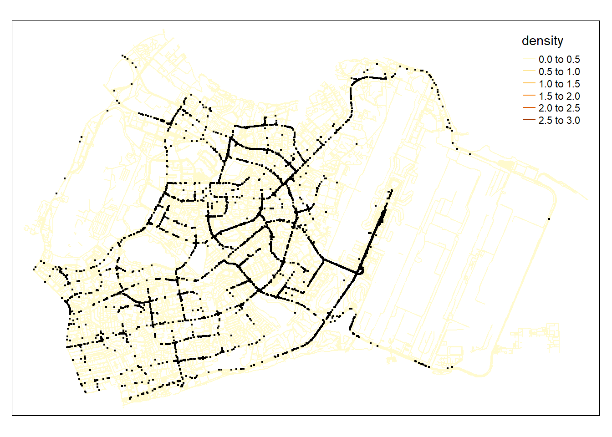